| EGit User Guide |
|
|

|
|
|
Concepts |
Getting Started
Overview
If you're new to Git or distributed version control systems generally, then you might want to read
Git for Eclipse Users first. If you need more details and background read the
Git Community Book or
Git Pro.
If there you are coming from CVS, you can find common CVS workflows for Git
Platform-releng/Git Workflows.
Basic Tutorial: Adding a project to version control
Configuration
Identifying yourself
Whenever the history of the repository is changed (technically, whenever a commit is created), Git keeps track of the user who created that commit. The identification consists of a name (typically a person's name) and an e-mail address. This information is stored in file ~/.gitconfig under dedicated keys.
EGit will ask you for this information when you create your first commit. By default, this dialog is shown only once until you create a new workspace or tick the checkbox "Show initial configuration dialog" on the Git Preference page:
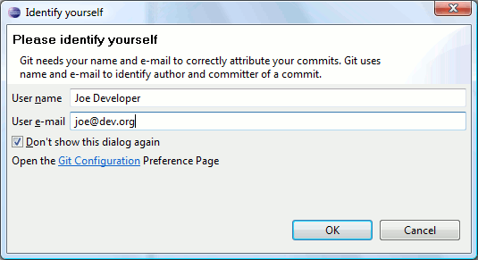
You can also untick "Don't show this dialog again" if you want to see it again later.
Instead of using this dialog, you can always change this information using the Git configuration:
- Click
Preferences > Team > Git > Configuration
- Click
New Entry and enter the key value pairs
user.email and user.name
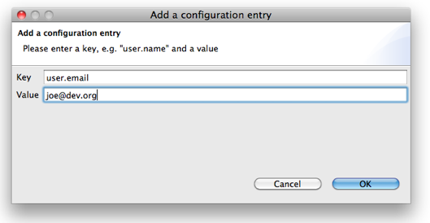
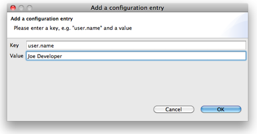
Setting up the Home Directory on Windows
Add the environment variable HOME to your environment variables.
- In Windows 7, type "environment" at the start menu
- Select "Edit environment variables for your account"
- Click the "New" button.
- Enter "HOME" in the name field
- Enter "%USERPROFILE%" or some other path in the value field.
- Click OK, and OK again. You have just added the Home directory on Windows.
EGit needs this path for looking up the user configuration (.gitconfig). HOME should point to your home directory e.g. C:\Users\Tom.
Ensure correct case! E.g. C:\users instead of C:\Users may cause problems!
If the HOME variable is not defined the home directory will be calculated by concatenating HOMEDRIVE and HOMEPATH.
If both HOME and HOMEDRIVE are not defined HOMESHARE will be used.
EGit shows a warning if HOME is not defined explicitly. Keep in mind that if you set the HOME environment variable while Eclipse is running, you will still see following warning. You will have to restart Eclipse for it to recognize the HOME value.
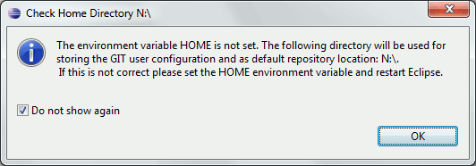
Create Repository
- Create a new Java project
HelloWorld.(In this case,the project was builded outside of your Eclipse Workspace.)
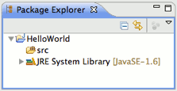
- Select the project, click
File > Team > Share Project
- Select repository type
Git and click
Next
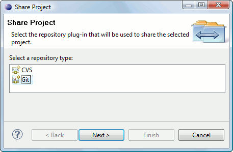
- To configure the Git repository select the new project
HelloWorld
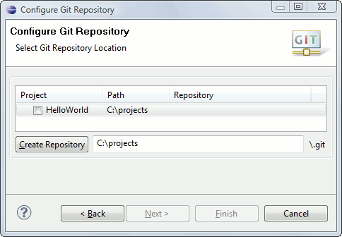
- Click
Create Repository to initialize a new Git repository for the
HelloWorld project. If your project already resides in the working tree of an exisiting Git repository the repository is chosen automatically.

- Click
Finish to close the wizard.
- The decorator text "[master]" behind the project shows that this project is tracked in a repository on the
master branch and the question mark decorators show that the
.classpath and .project and the .settings files are not yet under version control
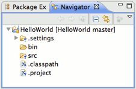
Track Changes
- Click
Team > Add on the project node. (This menu item may read
Add to Index on recent versions of Egit)
- The
+ decorators show that now the project's files have been added to version control
- Mark the "bin" folder as "ignored by Git", either by right-clicking on it and selecting
Team > Ignore or by creating a file
.gitignore in the project folder with the following content
/bin
- This excludes the
bin folder from Git's list of tracked files.
- Add
.gitignore to version control (
Team > Add):
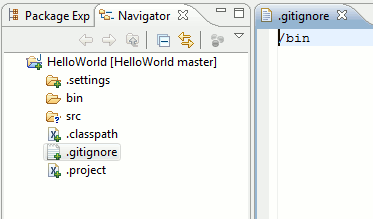
- You may have to set your Package Explorer filters in order to see
.gitignore displayed in the Package Explorer. To access filters, select the down arrow at right of Package Explorer tab to display View Menu.

- Select
Filters... from the View Menu and you will be presented with the Java Element Filters dialog. Unselect the top entry to display files that begin with . (period) such as
.gitignore.

- Click
Team > Commit in the project context menu
- Enter a commit message explaining your change, the first line (followed by an empty line) will become the short log for this commit. By default the author and committer are taken from the
.gitconfig file in your home directory.
- You may click
Add Signed-off-by to add a
Signed-off-by: tag.
- If you are committing the change of another author you may alter the author field to give the name and email address of the author.
- Click
Commit to commit your first change.
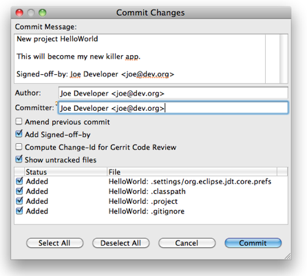
- Note that the decorators of the committed files changed.
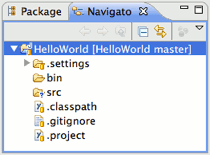
Inspect History
- Click
Team > Show in History from the context menu to inspect the history of a resource
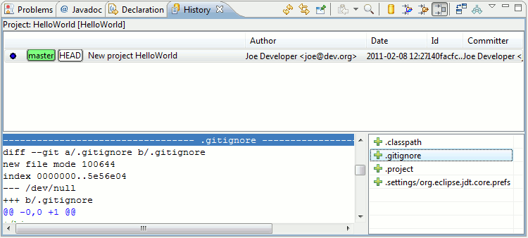
- Create a new Java class
Hello.java and implement it
- Add it to version control and commit your change
- Improve your implementation and commit the improved class
- The resource history should now show 2 commits for this class
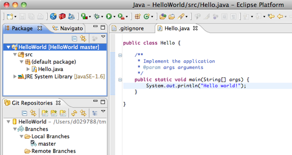
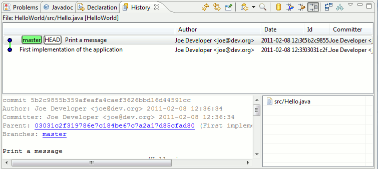
- Click the
Compare Mode toggle button in the History View
- Double click
src/Hello.java in the Resource list of the History View to open your last committed change in the Compare View
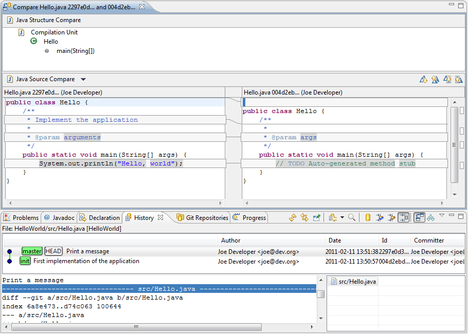
Congratulations, you just have mastered your first project using Git !
Github Tutorial
Create Local Repository
Create Repository at GitHub
- create a new repository at GitHub
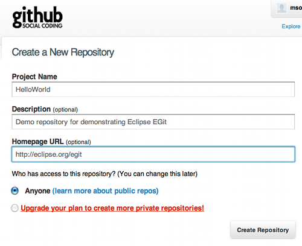
On the next screen you can see the URLs you may use to access your fresh new repository:
- click
SSH to choose the
SSH protocol. It can be used for read and write access
- click
HTTP to choose the
HTTP protocol. It can also be used for read and write access.
- click
Git Read-Only to choose the anonymous
git protocol for cloning. It's the most efficient protocol git supports. Since the
git protocol doesn't support authentication it's usually used to provide efficient read-only access to public repositories.
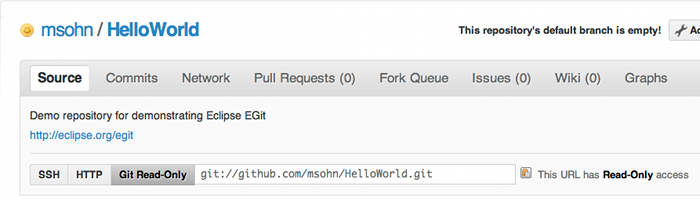
Eclipse SSH Configuration
- Open the Eclipse
Preferences and ensure that your SSH2 home is configured correctly (usually this is ~/.ssh) and contains your SSH2 keys

Push Upstream
- Click
Team > Remote > Push... and copy and paste the SSH URL of your new github repository
- If you are behind a firewall which doesn't allow SSH traffic use the github HTTPS URL instead and provide your github user and password instead of using the uploaded public SSH key. To store your credentials into the Eclipse secure store click
Store in Secure Store.
-
Note: many HTTP proxies are configured to block HTTP URLs containing a user name, since disclosing a user name in an HTTP URL is considered a security risk. In that case remove the username from the HTTP URL and only provide it in the user field. It will be sent as an HTTP header.
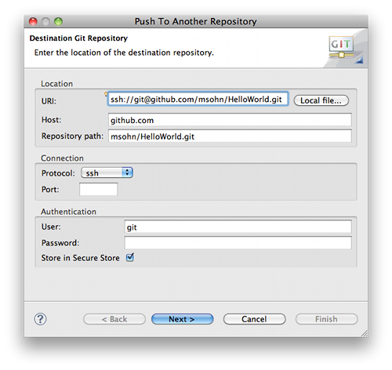
- Click
Next and on first connection accept GitHub's host key.
- Enter your SSH key's passphrase and click
OK.
- On the next wizard page click
Add all branches spec to map your local branch names 1:1 to the same branch names in the destination repository.
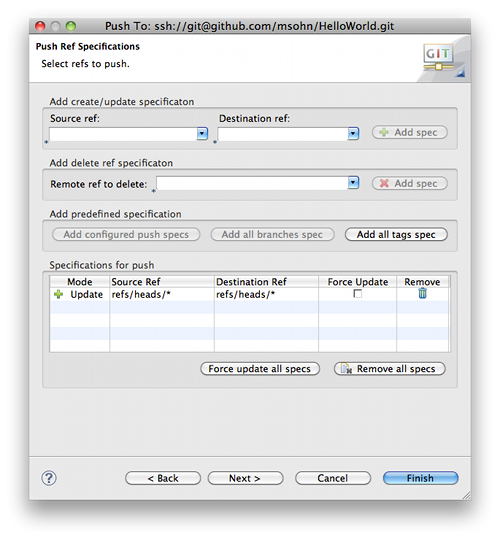
- Click
Next. The push confirmation dialog will show a preview of the changes that will be pushed to the destination repository.
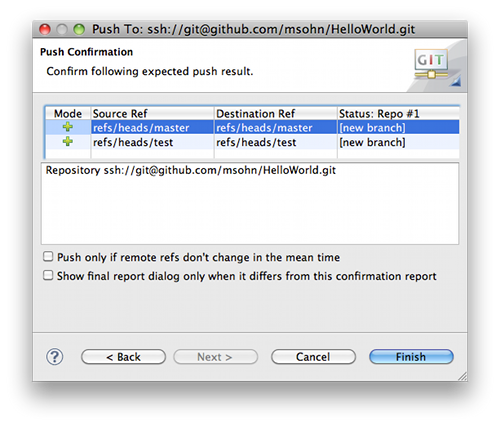
- Click
Finish to confirm that you want to push these changes.
- The next dialog reports the result of the push operation.

- Point your browser at your GitHub repository to see that your new repository content has arrived
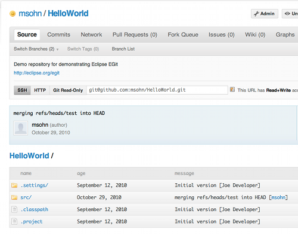
EclipseCon 2012 Git Tutorial
Find all exercises and the slides
here.
Follow the
exercise #1 to prepare for the Git Tutorial.
Find download links to the training packages below.
EGit Training Packages
Pre-installed EGit training packages including
- Eclipse SDK 3.7.2
- JGit, EGit 2.0-SNAPSHOT (nightly build)
- Github connector 2.0-SNAPSHOT (nightly build 2012-03-22)
- Mylyn Reviews Gerrit Connector 0.9-SNAPSHOT (weekly build 2012-03-22)
- Mylyn Builds 0.9-SNAPSHOT (weekly build)
Linux
[http://download.eclipse.org/egit/training/eclipse-SDK-3.7.2-linux-gtk-x86_64.tar.gz eclipse-SDK-3.7.2-linux-gtk-x86_64.tar.gz]
[http://download.eclipse.org/egit/training/eclipse-SDK-3.7.2-linux-gtk.tar.gz eclipse-SDK-3.7.2-linux-gtk.tar.gz]
Mac
[http://download.eclipse.org/egit/training/eclipse-SDK-3.7.2-macosx-cocoa-x86_64.tar.gz eclipse-SDK-3.7.2-macosx-cocoa-x86_64.tar.gz ]
[http://download.eclipse.org/egit/training/eclipse-SDK-3.7.2-macosx-cocoa.tar.gz eclipse-SDK-3.7.2-macosx-cocoa.tar.gz]
Windows
[http://download.eclipse.org/egit/training/eclipse-SDK-3.7.2-win32-x86_64.zip eclipse-SDK-3.7.2-win32-x86_64.zip]
[http://download.eclipse.org/egit/training/eclipse-SDK-3.7.2-win32.zip eclipse-SDK-3.7.2-win32.zip]
|
|
|
|
|
Concepts |